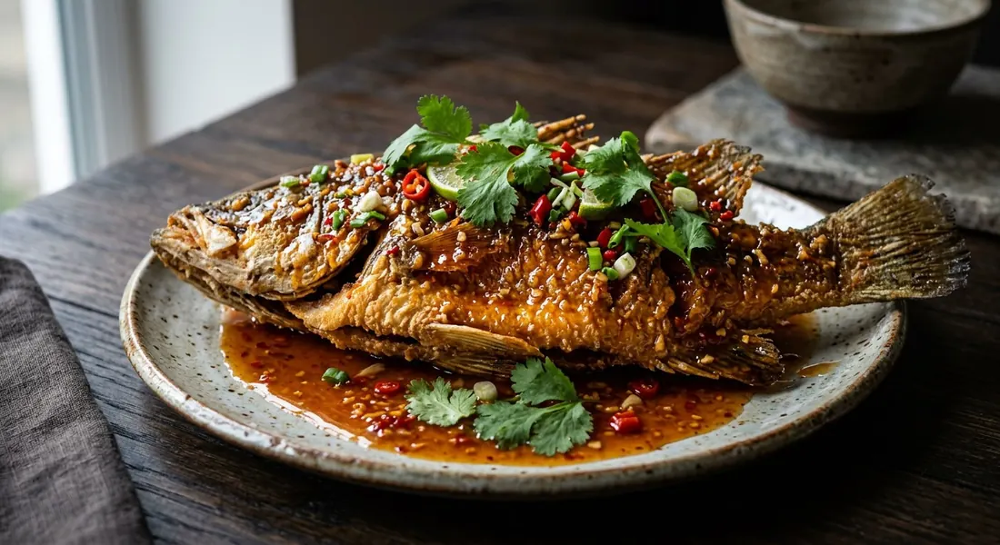

A whole fish deep-fried until the skin shatters, then the three-flavour sauce — tamarind sour, palm sugar sweet, a murmur of fresh chilli — poured over the top while it still crackles.

ปลาสามรส reads as it cooks: ปลา (pla), the fish; สามรส (sam rod), three flavours. But as Kapook's editors are careful to point out, the three are not equals. The sour leads — tamarind in the classic version — the sweet of palm sugar follows, and the heat trails behind as a murmur. Plenty of recipes leave the chilli out of the sauce altogether so children can eat it.
The dish travels under two names. Menus write ปลาสามรส, three-flavoured fish; home cooks say ปลาราดพริก, pla rad prik — fish with chilli poured over. The ราด (rad) is the technique, and it matters: the sauce is finished separately and poured over the fish on the plate, not in the wok, so the skin stays crisp under the glaze instead of softening in it.
Kapook's home-cook version opens with a wry observation: walk into any Thai restaurant and every other table seems to have one — and the price of ordering it is exactly why they wrote the recipe for making it yourself. Wongnai's cook adds the two rules that decide the dish: a fish patted bone-dry, and oil hot enough to sear it loose from the pan. Salt rubbed on the skin, they say, is what keeps it from sticking.
| Thai | English | Amount |
|---|---|---|
| ปลาทับทิม | Tilapia (thaptim) or other whole white fish | 1 (~600 g) |
| เกลือ | Salt | a little |
| แป้งทอดกรอบ | Crispy frying flour (optional) | 3 tbsp |
| น้ำมันสำหรับทอด | Oil for deep-frying | to cover |
| กระเทียมสับ | Garlic, chopped | 2 tbsp |
| พริกแดงสดสับ | Fresh red chillies, chopped | 2 tbsp |
| น้ำมะขามเปียก | Tamarind water | 3 tbsp |
| น้ำปลา | Fish sauce | 2 tbsp |
| น้ำตาลปี๊บ | Palm sugar | 3 tbsp |
| น้ำเปล่า | Water | 3 tbsp |
| ผักชี | Coriander, to finish | a few sprigs |
The Wongnai shortcut pot: barramundi with a pounded paste of garlic, coriander root and prik jinda chillies, sauced with tamarind water, a cup of ready-made sweet chilli sauce (น้ำจิ้มไก่) and half a cup of water, simmered until thick. The Kruakhuntoi pot: Spanish mackerel (ปลาม้า) cut in chunks, dusted with crisp flour and fried in pork fat, tossed in a glaze of pounded garlic and yellow and jinda chillies with a whole cup of vinegar, salt and 300 g coconut sugar. The Wongnai UGC pot: sea bass sauced with chopped garlic, chilli, onion, pineapple and tomato in tamarind and palm sugar, the fish tossed through the sauce in the wok.
The sour. Tamarind is the classic — Kapook's thaptim recipe, TrueID and the Wongnai UGC cook all use น้ำมะขามเปียก. Kruakhuntoi's restaurant recipe pours in a whole cup of vinegar instead, sweetening it with 300 g of coconut sugar. Wongnai's gam.sali builds the sauce on ready-made sweet chilli sauce (น้ำจิ้มไก่) with tamarind as backup, and Kapook's round-up allows sweet chilli sauce with vinegar. All of them still call the dish sam rod.
The fish. Whole white fish — barramundi, thaptim tilapia, nile tilapia — in Wongnai's, Kapook's and TrueID's recipes. Kruakhuntoi cuts Spanish mackerel (ปลาม้า) into chunks and dusts them with crisp flour, a version that fries in minutes and eats like nuggets in the glaze.
Pour or toss. The classic ราด: sauce poured over the crisp fish on the plate (Kapook, TrueID, Wongnai gam.sali). The Wongnai UGC cook and Kruakhuntoi instead return the fried fish to the wok and เคล้า — toss — it through the sauce until every piece is coated. The tossed version glazes deeper; the poured version keeps more crackle.
Vegetables in the sauce. The Wongnai UGC recipe stirs chopped onion, pineapple and tomato into the sauce — a chunkier, fruitier, sweeter version that edges towards pad priew wan. Every other source keeps the sauce pure: garlic, chilli, sour, sweet, salt.
The chilli. Most recipes fry fresh chillies in with the garlic. Kapook's round-up notes that some versions leave the chilli out of the sauce entirely — sour-sweet only, so children can eat — and others only scatter sliced chilli over the finished plate as garnish.
This recipe is translated from the following Thai-language sources. Where they disagree, we've said so.
1. Kapook Cooking — "ปลาทับทิมทอดสามรส เมนูปลาทอดทำเองได้ในราคาประหยัดกว่า" (the recipe used here, from home cook คุณเนินน้ำ) — cooking.kapook.com
2. Kapook Cooking — "10 เมนูสามรส อร่อยเข้มข้นฉ่ำซอสอิ่มได้ทุกมื้อ" (the sam-rod round-up: what the three flavours are, and the chilli-free versions) — cooking.kapook.com
3. TrueID Food — "แจกสูตร ปลาทอด ราดพริกสามรส กลมกล่อม พร้อมวิธีทอดปลาให้ฟูกรอบ ไม่ติดกระทะ!" (the tilapia pot and the no-stick frying rules, from กินได้อร่อยด้วย) — food.trueid.net
4. Wongnai — "วิธีทำ 'ปลาราดพริก สามรส' เมนูปลาทอดเข้มข้นครบรส" by gam.sali (the barramundi pot with sweet chilli sauce) — wongnai.com
5. Wongnai UGC — "สูตร ปลาทอดสามรส" by นาง สุประวีณ์ รัตนะ (the sea bass tossed through a pineapple-tomato sauce) — wongnai.com
6. Kruakhuntoi (ครัวคุณต๋อย) — "ปลาม้าสามรส" (the Spanish mackerel chunks glazed in vinegar and coconut sugar) — kruakhuntoi.com